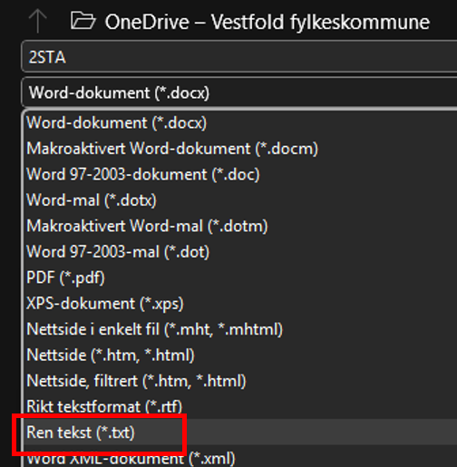

Gjør manuelle tilpasninger i klassekartet, du finner klassekartet litt lenger ned på siden.
OBS: Hvis du gjør manuelle endringer i klassekartet, vil knappen "Oppdater klassekart" endre oppsettet til det som er valgt i Steg 1.
Valgmuligheter
Flytt boksene ved å dra og slippe direkte i klassekartet
Legg til flere grupper, elever eller rader ved å bruke knappene under "Lag klassekart manuelt" (fungerer best dersom du legger elevene inn manuelt ved bruk av knappen Legg til elev)
Trykk på "Oppdater klassekart" for å generere klassekartet på nytt med valgte innstillinger
Teksten Klassekart, Romnummer, Elevens navn og Kateter kan endres ved å klikke på teksten
For å lage en importfil, skriv inn navnene på elevene i Word og lagre filen med filtypen .txt

Kjente feil
Når nettsiden oppdateres ved å bruke CTRL+F5 eller oppdaterknappen må klassekartet kan det være nødvendig å klikke på knappen "Nullstill klassekart"
Det er kun mulig å laste opp tekstfiler i filformatet .txt, se veiledning for hvordan du gjør dette via Word under knappen "Brukerveiledning" i venstremenyen
Utskrift av klassekartet fungerer ikke optimalt
Endring av antall rader og kolonner kan gjøre at klassekartet ikke ser så bra ut. Bruk knappen oppdater klassekart etter å ha gjort innstillinger slik at klassekartet blir oppdatert
Elever, grupper og bokser forsvinner fra klassekartet når du endrer antall rader og kolonner, trykk oppdater klassekart, da blir de synlige igjen, elever og grupper som er lagt inn manuelt forsvinner fra klassekartet
Avanserte krav
Pedagogiske vurderinger
Når vi skal plassere elevene i klasserommet eller dele inn i grupper er det flere ting vi bør tenke på.
Individuelle fokus, tilgang til læreren, behov for å sitte sammen med en venn eller sitte alene for å nevne noen områder.
Tenk spesielt på potensielle distrakasjoner, behov for personlig rom, samarbeid og balanse.
Husk at elevene har varierte ferdigheter og preferanser knyttet til kommunikasjon
Du finner flere tips og råd under nedenfor
Skoleprogrammet VIP Makkerskap skal gjøre elever bedre rustet til å ta vare på egen psykisk helse og skape et godt og trygt læringsmiljø. Les mer om VIP Makkerskap programmet her
Områder å være oppmersome på
Individuelle fokus
Plasser elever som trenger ekstra hjelp i nærheten av læreren
Plasser elever som lett blir distrahert, lengst unna vinduer og dører.
Gi hver elev nok plass til å føle seg komfortabel og unngå å føle seg "låst".
Sørg for at alle elever har tilgang til deg for spørsmål og veiledning tilpasset behov.
Når elevene skal sitte to og to
Ved å sitte to og to kan de hjelpe hverandre med å forstå vanskelige konsepter og gi tilbakemeldinger
Noen elever kan ha god nytte av å ha en makker som kan gi støtte og motivasjon, spesielt hvis de føler seg usikre eller trenger litt ekstra hjelp
Plasser elever sammen som kan samarbeide godt og støtte hverandre faglig.
Unngå å plassere to elever sammen som kan forstyrre hverandre eller som har en historie med konflikter, dette kan endre seg rask, vær oppmerksom på endringer i klassemiljøet.
Kombiner elever med ulike styrker for å fremme læring og samarbeid.
Forsøk å ha makkerpar med kommunikasjonsstiler som ikke forstyrrer andre. Kommunikasjonsstilene kan være svært annerledes når de er to og to enn når de jobber alene
Når elevene skal sitte i grupper
Grupper med 3-4 elever kan være en god størrelse for samarbeid og diskusjon.
Grupper med 5-6 elever kan være en god størrelse for gruppearbeid og prosjekter.
Plasser grupper slik at de har nok plass til å jobbe sammen uten å forstyrre andre grupper.
Lag grupper som kan få muligheten til å sette seg et annet sted enn i klasserommet, slik at de som trenger ekstra støtte fra lærer får mulighet til arbeidsro og unngår eksterne forstyrrelser
Sørg for at hver gruppe har en blanding av ferdigheter og personligheter for å fremme samarbeid og læring.
Oppmuntre til at hver elev i gruppen har en tydelig rolle for å sikre at alle bidrar.
Bytt på gruppene jevnlig for å gi elevene mulighet til å samarbeide med ulike personer og lære av hverandre.
Plasser grupper slik at læreren enkelt kan bevege seg rundt og gi veiledning.
Tips til gruppeinndeling
Bruk tilfeldige metoder som trekning eller digitale verktøy som for eksempel Klassekartbyggeren👷♂️ for å danne grupper. Dette kan fremme nye vennskap og samarbeid.
Del inn grupper basert på elevenes ferdigheter og interesser for å sikre at hver gruppe har en god balanse.
La elevene velge sine egne grupper av og til for å fremme trivsel og komfort.
Bytt på gruppene jevnlig for å gi elevene mulighet til å samarbeide med ulike personer og lære av hverandre.
Gi elevene mulighet til å gi tilbakemelding på gruppene og samarbeidet for å fremme læring og samarbeid.
Oppmuntre til at hver elev i gruppen har en tydelig rolle for å sikre at alle bidrar.